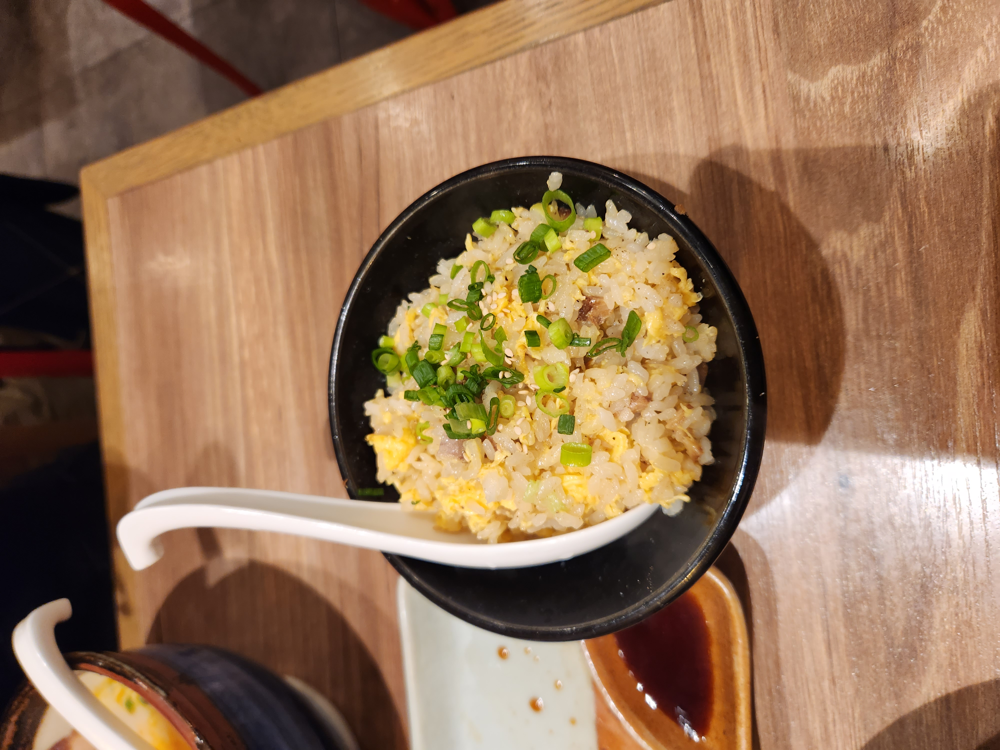

Fried Rice Recipe

A Brief Description...
Fried rice is a versatile dish that is easily tailored to individual taste. There are so many varieties of fried rice in the world that are just as diverse in culture as they are diverse with ingredients.
The following recipe is a very basic rundown of a barebones fried rice, to give a basic understanding of fried rice for which any addition/substitution can be made afterward!
Ingredients for Egg Fried Rice
- At least 2 cups of cooked rice. Preferrably refrigerated for a day
- If less than 2 cups is used, it will be more difficult to cook
- If trying to use freshly cooked rice, make sure to reduce the amount of water used to cook the rice to prevent it from being soggy when cooking later
- 2 eggs
- Any neutral cooking oil
- Salt
- Monosodium Glutamate or Soy Sauce
That's it! That is what is at the core of every fried rice. Even eggs aren't the most necessary ingredient.
Here are some additional ideas to make your fried rice more exciting.
- Green Onion
- Shredded cabbage
- Finely diced yellow onions
- Sliced Chinese sausage
- Diced spam
- Cubes of steak
- Chicken
- Pork
- Shrimp
- Frozen carrots, peas, and lima beans
- Kimchi
- Garlic
Feel free to use as many or as few ingredients as you'd like, rice can be adapted to anyone's palette.
Steps
- Heat up a wok on high.
- Add your neutral cooking oil.
- Separately, crack your eggs into a small bowl and stir until mixed evenly.
- When the oil is hot, pour the eggs into the wok and stir quickly to scramble.
- Remove eggs and place in a container when scrambling is finished.
- Add neutral cooking oil
- Cook any protein that you may have prepared separately
- When protein has completed cooking, remove it and place in a separate container
- Add nuetral cooking oil
- Now add in any aromatics to the oil
- Once fragrant, add in the rice
- Stir rice continually, breaking up any chunks
- Once rice is well separated, add in all of the ingredients prepared earlier
- Mix everything to integrate and spread the ingredients
- Break up any clumps of ingredients to make the fried rice heterogenous
- Add salt to taste
- Add MSG or soy sauce to taste
- Note that soy sauce may make your rice more clumpy
- Normally a minimal amount of soy sauce is added, mostly for color
- Serve and enjoy!
Home